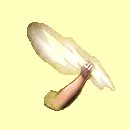
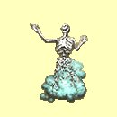
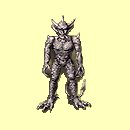
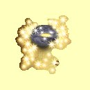
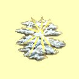
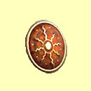
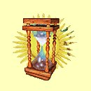
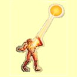
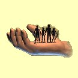

Magie svìtla
Svìtelná støela
Mana: 5, Cena: 1000, Potøebná úroveò dovednosti: Normální
Vystøelí na samostatný cíl svìtelnou støelu, která zpùsobí 1-4 body zranìní za bod dovednosti Magie Svìtla. Zranìní zpùsobené proti nemrtvým je zdvojnásobeno.
|  | Normální | Støednì rychlé zotavení |
| Expert | Rychlej¹í doba zotavení | |
| Mistr | Rychlej¹í doba zotavení | |
| Velmistr | Nejrychlej¹í doba zotavení |
Znièení nemrtvého
Mana: 10, Cena: 1500, Potøebná úroveò dovednosti: Normální
Pøivolá sílu nebes na znièení temné magie, která tvoøí ¾ivot nemrtvých a zpùsobí samostatnému cíli 16 bodù zranìní plus 1-16 bodù za bod Magie Svìtla. Toto kouzlo pùsobí jen na nemrtvé.
|  | Normální | Støednì rychlé zotavení |
| Expert | Rychlej¹í doba zotavení | |
| Mistr | Rychlej¹í doba zotavení | |
| Velmistr | Nejychlej¹í doba zotavení |
Odstraò magii
Mana: 15, Cena: 2000, Potøebná úroveò dovednosti: Normální
Odstraní v¹echna kouzla na v¹ech nestvùrách v dohledu dru¾iny, jak pomocná, tak i zraòující. Zotavení závisí na zku¹enosti v Magii Svìtla.
| Normální | Støednì rychlé zotavení | |
| Expert | Rychlej¹í doba zotavení | |
| Mistr | Rychlej¹í doba zotavení | |
| Velmistr | Nejychlej¹í doba zotavení |
Ochromení
Mana: 20, Cena: 2500, Potøebná úroveò dovednosti: Normální
Ochromení doèasnì znemo¾ní nestvùøe se pohybovat nebo útoèit bìhem doby trvání tohoto kouzla, která je 3 minuty za bod dovednosti v Magii Svìtla. Na ochromené nestvùry mù¾e¹ útoèit, ony nemohou útoky opìtovat.
|  | Normální | Støednì rychlé zotavení |
| Expert | Rychlej¹í doba zotavení | |
| Mistr | Rychlej¹í doba zotavení | |
| Velmistr | Nejrychlej¹í doba zotavení |
Pøivolej elementála
Mana: 25, Cena: 3000, Potøebná úroveò dovednosti: Expertní
Pøivolá malého svìtelného elementála, aby bojoval s dru¾inou. Zùstane s tebou, dokud kouzlo nevyprchá nebo dokud nebude znièený. Kouzlem povolá¹ pouze jednoho elementála.
|  | Normální | n/a |
| Expert | Trvání 5 minut za bod dovednosti. Max. 1 elementál. | |
| Mistr | Pøivolá svìtelného elementála. Trvání 15 minut za bod dovednosti. Max. 3 elementály. | |
| Velmistr | Pøivolá velkého svìtelného elementála. Max. 5 elementálù. |
Den Bohù
Mana: 30, Cena: 3500, Potøebná úroveò dovednosti: Expertní
Doèasnì zvý¹í v¹ech sedm statistik v¹em postavám na trojnásobnou hodnotu dovednosti v Magii Svìtla. Toto kouzlo pøetrvá, dokud nepùjde¹ odpoèívat.
|  | Normální | n/a |
| Expert | V¹echna kouzla jsou seslána s trojnásobnou hodnotou dovednosti | |
| Mistr | V¹echna kouzla jsou seslána se ètyønásobnou hodnotou dovednosti | |
| Velmistr | V¹echna kouzla jsou seslána s pìtinásobnou hodnotou dovednosti |
Duhové svìtlo
Mana: 35, Cena: 4000, Potøebná úroveò dovednosti: Mistrovská
Zpùsobí 25 bodù zranìní plus 1 bod za bod dovednosti v Magii Svìtla v¹em nestvùrám v dohledu. Toto kouzlo mù¾e být sesláno pouze uvnitø.
| Normální | n/a | |
| Expert | n/a | |
| Mistr | Støednì rychlé zotavení | |
| Velmistr | Rychlej¹í doba zotavení |
Den ochrany
Mana: 40, Cena: 5000, Potøebná úroveò dovednosti: Mistrovská
Souèasnì zakouzlí Odolnost proti ohni, vzduchu, vodì, zemi, tìlu a mysli plus Pád pírka a Èarodìjovo oko na v¹echny tvé postavy se ètyønásobnou dovedností v Magii Svìtla.
|  | Normální | n/a |
| Expert | n/a | |
| Mistr | V¹echna kouzla jsou seslána se ètyønásobnou dovedností | |
| Velmistr | V¹echna kouzla jsou seslána s pìtinásobnou dovedností |
Hodina moci
Mana: 45, Cena: 6000, Potøebná úroveò dovednosti: Mistrovská
Souèasnì zakouzlí Zrychlení, Hrdinství, ©tít, Kamenná kù¾e a Po¾ehnání na v¹echny tvé postavy se ètyønásobnou dovedností v Magii Svìtla.
|  | Normální | n/a |
| Expert | n/a | |
| Mistr | V¹echna kouzla jsou seslána se ètyønásobnou dovedností | |
| Velmistr | V¹echna kouzla jsou seslána s pìtinásobnou dovedností |
Sluneèní paprsek
Mana: 50, Cena: 7500, Potøebná úroveò dovednosti: Mistrovská
Sluneèní paprsek je druhé nejsilnìj¹í kouzlo ve høe. Zpùsobuje 20 bodù zranìní plus 1-20 bodù za bod dovednosti v Magii Svìtla na jednu samostanou nestvùru. Toto kouzlo funguje jen venku bìhem dne.
|  | Normální | n/a |
| Expert | n/a | |
| Mistr | Pomalá doba zotavení | |
| Velmistr | Støednì rychlé zotavení |
Bo¾ský zásah
Mana: 55, Cena: 10000, Potøebná úroveò dovednosti: Velmistrovská
Tøikrát za den mù¾e¹ po¾ádat nebesa o kompletní vyléèení v¹ech tvých postav, doplnìní many a odstranìní v¹ech ne¾ádoucích úèinkù. Ov¹em, jako cenu za toto kouzlo, bohové zpùsobí, ¾e sesílatel zestárne o 10 let. Zotavení z tohoto kouzla je dáno zku¹eností v Magii Svìtla.
|  | Normální | n/a |
| Expert | n/a | |
| Mistr | n/a | |
| Velmistr | Toto kouzlo je tak dobré, jak jen mù¾e být! |